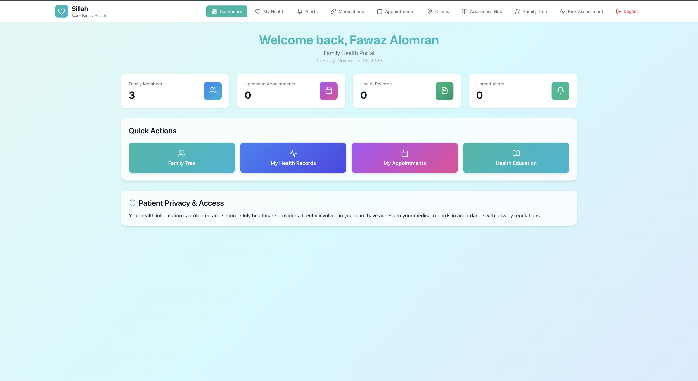
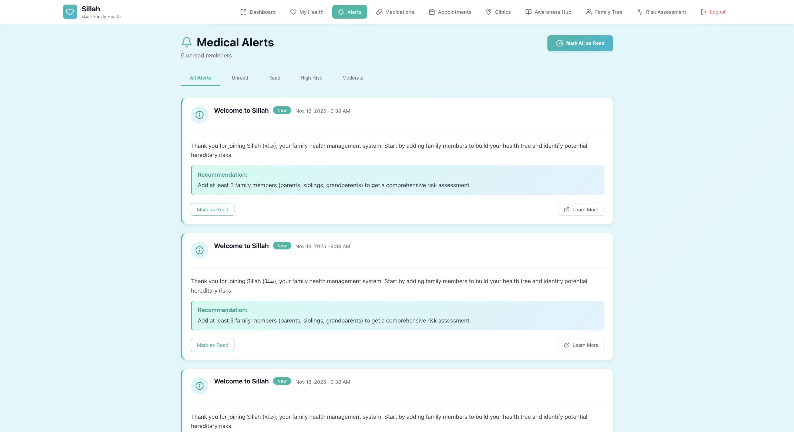
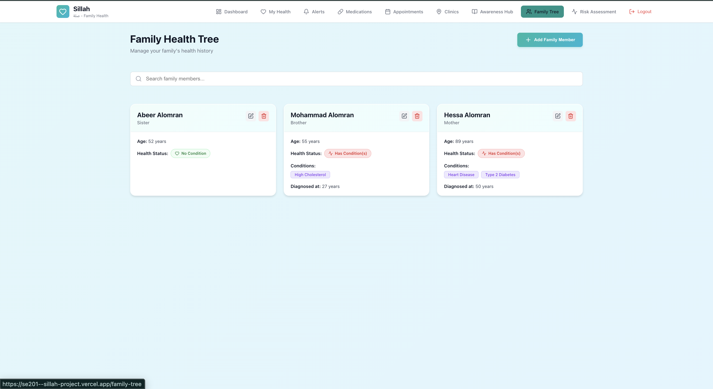
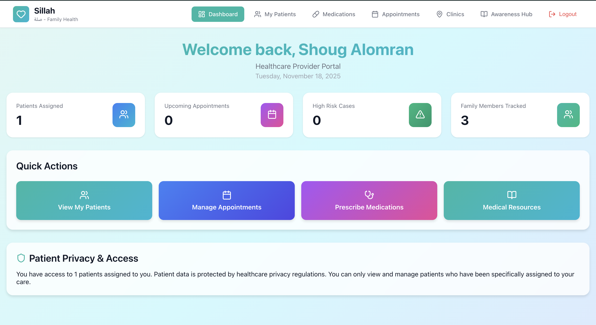
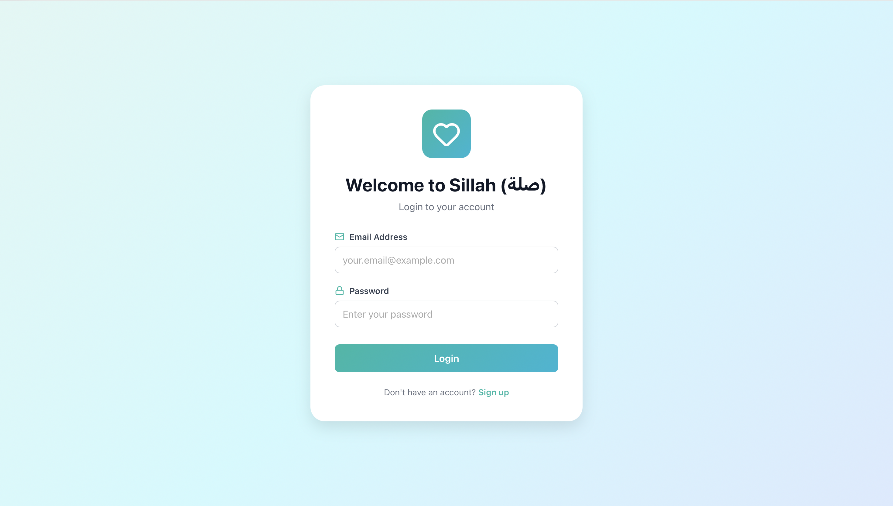
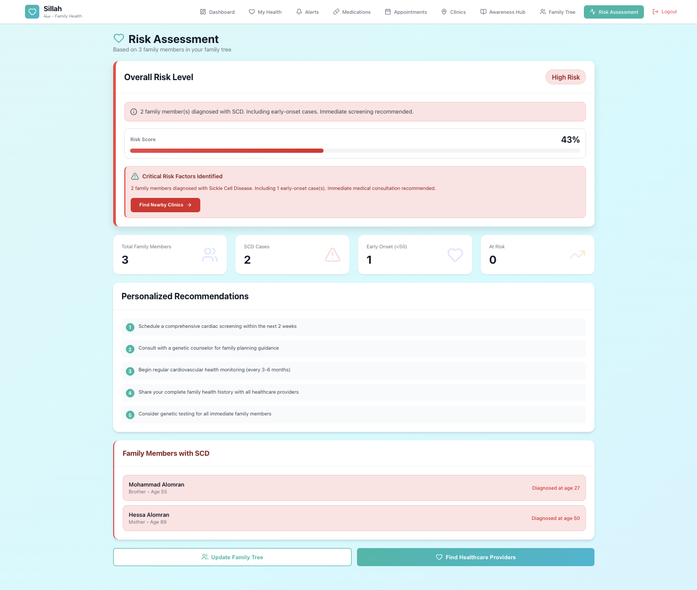
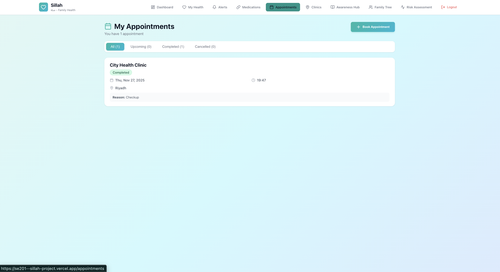
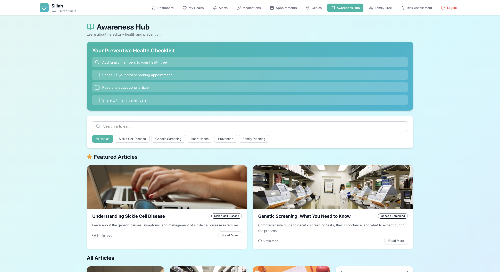

A comprehensive presentation of the Sillah project journey based only on the approved Phase 1, Phase 2, and Phase 3 reports: from vision and scope, to elicitation, to software requirements analysis for a family-centered preventive health web platform.
Top-level sections for quick navigation through the complete project story.
The reports consistently position Sillah as a family-centric preventive-health web platform aimed at hereditary condition awareness and early risk detection.
Vision & scope, elicitation, and requirements analysis.
Used to validate the proposed system direction.
Documented in the Phase 3 analysis package.
The minimum meaningful operational release.
Listed among the Phase 3 quality attributes.
Phase 1 identifies a rising number of inherited heart diseases and other hereditary conditions in Saudi Arabia, paired with the lack of a proper family-centered system for monitoring health records and advising on inherited risks.
The reports align around a web-based, bilingual, preventive-health platform with family profile management, health-event recording, rule-based alerts, dashboard summaries, and simulated clinic-oriented support.
The project moved in a classic software analysis sequence: define the product, elicit stakeholder needs, then formalize the specification.
Phase 1 framed the business need, the target users, the feature scope, the project priorities, and the product limitations for the first release.
Phase 2 gathered evidence through interviews, surveys, observation, document analysis, and competitive review to refine traceable user requirements.
Phase 3 translated those needs into a structured SRS with functional requirements, interfaces, quality expectations, business rules, and a domain model.
Versioned document history in Phase 1 shows refinement from template population to final revision, keeping the scope anchored around the initial preventive-health experience.
MoSCoW prioritization and stakeholder-specific requirements helped separate essential functions from future enhancements and cross-check assumptions against real feedback.
The approved SRS consolidated the project into an implementation-ready analysis package while retaining limits such as no diagnosis and no hospital-system integration in the current release.
This phase established why Sillah should exist, what the first release should contain, and what the prototype should explicitly avoid.
The reports position Sillah as a response to the lack of a unified, family-centric digital system in Saudi Arabia that can track hereditary cardiac conditions, detect risk patterns, provide personalized alerts, connect users to clinics, offer culturally relevant awareness content, and support bilingual accessibility.
Phase 1 sets targets such as at least 80% onboarding completion, family tree creation in under five minutes, and a System Usability Scale score of at least 80.
Business risks include low trust in sharing sensitive health data, inaccurate entry, evolving clinical rules, overlapping competitors, and prototype-level compliance demands.
Deployment considerations emphasize HTTPS, secure authentication, Saudi-wide access, mobile-first usage, AST scheduling alignment, and full Arabic support with culturally appropriate content.
This phase turned the Phase 1 vision into evidence-backed user requirements with clear stakeholder coverage.
ENT surgeon, interviewed on 15 March 2026. Phase 2 records a preference for concise patient summaries and highlights the value of family history and clinically useful recommendations.
Cardiac surgeon, interviewed on 28 March 2026. Phase 2 notes support for summaries tailored to appointment context and concern for workflow disruption.
The survey validated family-centered features, preventive alerts, bilingual support, role-based access control, and strong interest in privacy and usability.
Track chronic and hereditary conditions, include pediatric profiles from birth, show meaningful alerts, provide specialist referrals or lifestyle guidance, and preserve medically appropriate language.
Create and manage multiple family profiles, record hereditary conditions, generate personalized alerts, view notification history, simulate appointments, and switch dynamically between Arabic and English.
Providers wanted validated data, concise patient summaries, and clinically appropriate guidance. Administrators needed role management, user account control, educational-content management, and secure oversight.
Phase 2 found that many families do not have a structured way to organize health information, while PDPL and preventive screening guidelines shaped the security, privacy, and consent expectations for the system.
Phase 3 formalized the system into release scope, interfaces, detailed features, quality attributes, business rules, and a domain model.
The current release focuses on web-based family health tracking, health event recording, risk alert generation, dashboard summaries, and a limited database interaction layer, while direct diagnosis, real-time clinical decision-making, and hospital-system integration remain out of scope.
Registration, authentication, secure access control, credential validation, and logout capabilities form the secured entry point of the system.
Add, edit, delete, and persist family member profiles while linking every profile to the owning user account.
Record, store, view, update, and delete health event history for each tracked family member.
Evaluate stored health data against predefined rules, generate alerts, and update them dynamically as new information is entered.
Summarize family health records, display active alerts, and refresh derived insights in real time or on demand.
Provide controlled SQL execution and CRUD demonstration workflows through the application interface.
Phase 3 defines the key entities as User, Family Member, Health Event, Risk Alert, Appointment, and Dashboard Summary, reinforcing a user-owned data model in which one user manages multiple family members and each member can hold events and alerts.
You added real prototype screens in the project images folder, so this section now uses them directly to support the report-driven narrative.

This screen aligns with the Phase 3 feature set by surfacing family-member counts, appointments, health records, unread alerts, quick actions, and a privacy-focused access message in one view.
Supports: dashboard visualization, owner-controlled access, and the family-centered workflow described across the reports.



The family health tree visual supports the Phase 2 and Phase 3 emphasis on adding, editing, and reviewing family-member profiles together with hereditary-condition data.
Supports: the documented “Manage Family Members” use case and the user-owned domain model.
The doctor portal reinforces the provider-facing needs captured during elicitation: patient access, appointment handling, medication workflows, and a clinically structured portal experience.
Supports: healthcare-provider requirements and future clinical workflow alignment discussed in Phase 2.
The medical alerts interface visually complements the reports’ emphasis on rule-based preventive alerts, notification history, and recommendation content that guides users toward next steps without crossing into diagnosis.
These images map directly to major report themes: family-centered data ownership, preventive alerting, dashboard summaries, privacy-aware access, and the bridge between patient and provider workflows in a healthcare web application.
These additional screens make the presentation feel complete by showing entry, guidance, prevention, and follow-up moments across the user journey.

The login screen supports the reports’ repeated emphasis on secure authentication, controlled access to sensitive health data, and a clean bilingual-friendly patient-facing experience.

A direct visual match for the preventive-alert and rule-based screening story documented in all three phases.

Supports the simulated booking and follow-up workflow repeatedly described in the scope and user requirements.

This screen reinforces one of Sillah’s strongest differentiators in the reports: culturally relevant preventive education, curated resources, and guided health-awareness content for families.
The reports include both quantitative and qualitative support for the direction of the system.
Phase 3 records strong positive agreement around preventive-health tracking, risk alert functionality, and the family-centered interaction model, noting that more than 80% of participants accepted the proposed system features.
Phase 2 highlights clear demand for family-centered functionality, preventive alerts, security and privacy protections, and bilingual usability, while also identifying future interest in AI prediction, emergency alerts, wearable integration, and trend tracking.
Role-based access control and privacy protection received strong stakeholder emphasis, consistent with PDPL-aware handling across the reports.
The language preference split in Phase 2 and the repeated Phase 1 and Phase 3 requirements make bilingual Arabic and English support a validated necessity, not just a design preference.
Healthcare interviews helped shape the system as a preventive support tool with structured summaries and recommendations, while keeping diagnosis out of scope.
Taken together, the three reports show a coherent software-analysis arc from business need to structured specification.
Source basis for this presentation: Phase 1 Vision & Scope, Phase 2 Requirements Elicitation, and Phase 3 Requirements Analysis reports, plus the local project images already present in the repository. No additional project facts were introduced beyond those materials.